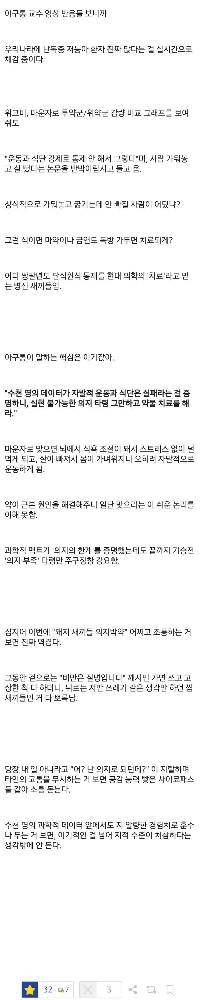
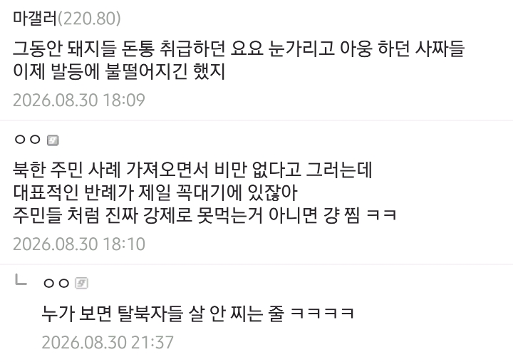

https://www.dogdrip.net/721987696
https://www.dogdrip.net/721989020
관련 글


https://www.dogdrip.net/721987696
https://www.dogdrip.net/721989020
관련 글
삼시세끼 먹는데 아침은 단백질보충제랑 그릭요거트로 간단하게 먹는편, 주사 맞을 때 단백질 지방을 섭취해주는게 좋다는 의사 컨텐츠 보고 시키는대로 하는 중
점심저녁밥은 특별히 줄여먹으려고 노력안하는데 자연스럽게 평소보다 좀 덜먹게 되긴 하는듯 과식하면 소화가 잘 안됨
진짜 독한맘 먹고 설연휴 부터 지금까지 일주일중 5일은 하루 1끼, 주말에는 하루 세끼 먹고, 영양제, 비타민, 단백질 보충제 챙겨먹으면서 식단 하는중인데,
직업이 육체노동 위주임에도 살이 잘안빠짐.
최대 7kg 빠지고 왔다갔다 하는중이고, 극한식단+퇴근후에 고강도 운동 까지 해야 무게가 줄어드는데, 딱 하루 이틀만 과식하거나 단거 먹으면 도로 원상복구 되버림.
오히려 너무 안먹으면 안빠질건데? 기초대사량이상은 섭취해
약값좀 내려달라고!!
담배피면서 돼지 욕하는 것 만큼 웃긴게 없음ㅋㅋ
비만이면 ㅇㅈ인데
과체중(175에 75정도)은 위고비 맞아도 되..나..?
BMI 25이하는 안맞아도 됨. 27이상인데 대사증후군(고혈압, 당뇨전단계 또는 당뇨, 고지혈증중 두개이상)이 있거나 30이상이 대상임. 물론 자비로.
여기도 보면 돼지새끼들 많네 이지랄하는 저능아친구들많음ㅋㅋ
나도 82에서 70kg까지 마운자로 두 달 맞고 뺐는데, 지금 1년지났는데 74kg 임
돈없어서 운동,식습관으로 유지 중
돼지들 냄새나
의지만 있으면 서울대 가는대 안가고 뭐했는지 몰라
난 비만은 질병이 아니라고 생각함. 의지로 극복가능한 사람도 있으니까... 근데 의지로 극복이 가능하지 않는 사람들은 뇌의 어딘가가 망가져서 "폭식"을 겁나게 하는 걸로 봄. 먹을껄로 스트레스 푸는 사람들 많잖아? 진짜 들어가는 음식이 적은데, 살이 찌는 거 자체가 이상한거지...
결국 인간 몸은 먹는 데로 몸이 반영함. 결국 "비만"이 질병인게 아니라 몸 속 호르몬 체계가 무너져서 폭식을 하던가 뇌가 다쳐서 폭식을 하던가 둘 중 하나인거 같음. 그냥 "폭식환자"로 부르는게 많다고 봄. ADHD환자마냥 관리해줘야함. 진짜 개 노력해서 비만에서 벗어난 사람들은 질병이라서 벗어난건가...?
차력쇼해서 성공하는 극소수를 가지고 일반화 하면 안됨 ㅋㅋㅋ
의지로 되는건 5~10kg 사이고 초고도비만에서 빼서 유지하는 사람은 일상생활 까지 포기해야 함. 나도 차력쇼 해서 성공한 한 사람인데 특이케이스일 뿐. 비만 전체로 보면 진짜 탈출이 너무 힘들다.
주변에 아토피 심하다가 고기 안먹고 유기농만 섭취하고 운동하고 해서 아토피 거의 나은 사람 있는데.. 그럼 아토피는 질병 아니지?
아구통 의사 주장도 반은 걸러들을 필요는 있음.
애초에 그 그래프 레퍼런스도 없고 reproducing이 가능한 그래프가 아닌데 뭔 근거로 그걸 신빙함?
원래 헬스뷰티쪽 논문은 신빙성이 많이 떨어짐. 수많은 논문들로 교차검증 해야 될까말까.
그냥 그런 주장을 하는 사람 / 결과가 있다 정도로 생각해야함.
과학은 의심에서 시작함. 성경이 아님. 적혀있다고 믿으면 끝이 아님.
이것도맞네
한국에서 약 싸게 안팔거같으니 걍 빨리 꼽아라 나도 8키로째 빼는중임
여기댓글만봐도 저능아가 많은거 알겠으 ㅋㅋ

죽지 않을 정도로 하루 한끼(반끼) 혹은 물만 먹으면서 두달 안되는 기간동안 20키로 넘게 뺀 내 다이어트 환경은 대학 졸업하고 고향(시골)에서 무직 상태였음 다른 조건이었으면 힘들었을 듯
그냥 자기 특징 외 모든걸 혐오하는게 요즘 트랜드잖아?
백수들이라 집에 갖혀게시다네요~
비만 아니어본 사람은 이걸 절대 이해하지 못한다. 비수술로 의지로 체지방 9% 대 까지 빼봤는데도 유지 자체는 의지로 되는게 아니더라, 8년동안 빼고 유지했는데 결국 돼지로 회귀함. 체질 절대 안 변함. 처음부터 비만이 아니어야 살이 안찐다. 안먹어도 시도 때도 없이 음식생각이 나고 이건 본능에 이끌려다니는 동물 새끼도 아니고 존나 참아내는데 자괴감만 들어버림.
그래서 결국 나도 위소매 절제술 받고 하루도 운동 거른적 없고 식단 지켰다. 그래도 돼지 탈출이 안되더라. 2년 지났는데 10kg 이상이 쪄버림. 물리적으로 최대한 못 먹게 할 뿐 뇌는 계속 음식 흡수율을 맥시멈으로 끌어와서 다시 돼지로 만들려고 발악을 함. 단언컨대 많이 안먹는다...
결국 마운자로 꼽았는데 참 현타가 쎄게 오더라. 운동으로 살빼라 이런 진부한 말이 그냥 의지로 키크겠단 말과 같음. 대사질환이라서
"내가 살을 빼면서 최대로 발휘해 본 참을성이랑 의지 따위는 마운자로 최소용량 2.5mg 따리 한방에 한참 못미치고, 호르몬 주사 한방이 내가 살면서 만든 최대 의지력을 이리도 가볍게 압도할 수 있다니? 정상 체중인 사람들이 왜 처먹지 말고 운동하고 살 빼라는지 알거 같다. 처음으로 정상인의 호르몬을 가진 시각에서 보니까 이게 음식을 안 먹어도 살만하구나. 그리고 통제가 되니까 그게 되니까 돼지들한테 그리도 가혹하게 씨부리는 거구나? 이게 정상인들이 느끼는 삶이구나... 난 이거 처음 느껴봤는데... 이게 되는거구나?"
참 쇼킹한 경험이었음
돼지들아. 운동이랑 식이로 살 빼는건 , 진짜 고도비만까지 간 돼지들에게는 그 자체로도 뭘 해도 관절 나가고 위험하다. 애초에 진짜 인간찬가라 불러야 할 차력쑈로 불러도 무색할 정도로 불가능에 가까운 수준의 영역이다. 그냥 딸깍 마운자로 위고비 해라... 객기 부리지말고 관절에 무리 안 갈 정도로 비만주사로 몸무게 내린 다음에 운동이라도 시작해라. 제발 돼지들한테 의지박약 타령하면서 너무 가혹하게 굴지마라... 슬프다.
의지와 유전자한테 진 결과가 비만이라면
결심해서 유전자를 이겨내는 것이 인간찬가 아닌가?
약물을 신봉하는 사파놈들 에잉ㅉㅉ
인간찬가는 달성한 사람이 영웅이지 나머지 일반인을 욕하진 않잖아요 ㅠㅠ
진짜 배고픔. 식욕이 다이어트의 가장 큰 적임.
위절제술 커뮤니티 가보면 더 가관인게 ㅋㅋ 위절제술로 살빼놓고 신입 절제술 환자들이 뭐가 먹고 싶은데 먹어도 되나요? 이러면 의지가 있니없니, 계속 뚱뚱한채로 살고 싶으면 먹고 여기다 묻지마라 등등 ㅋㅋ 아주 그런의지가 있었으면 수술을 왜한건지 ㅋㅋ
매운맛을 덜 봐서 그럼....
수술을 했으면 제일 먼저 먹고싶은 음식 찾아야 할 게 아니라, 위절제를 했으면 골든타임 안에 운동을 최대한 해서 1년간 몸을 회복시켜야 하거든? 나도 받은 수술이지만 이거 안지키고 "수술이 살빼는거 다 해주겠지" 이러다가 만성후유증이랑 소화불량 시달려서 고생하고 애꿎은 수술만 탓하고 후회하는 바보들도 엄청 많이 봄... 내가 받은 병원에 네이버 밴드에도 수술받은 사람들 있는 커뮤 있는데 거기도 간간히 보인다... 분명 수술전이랑 후에도 계속 의사가 셀수도 없이 회복을 위해서 1년간은 반드시 운동하라고 강조하는데.... 돼지력+게으름이 남다르게 넘사벽인 환자들은 그걸 안 함....
위절제술 커뮤니티에서 흔히 나오는 “위를 수술했지 뇌를 수술한 건 아니니 먹는 건 의지로 참아야 한다”는 논리도 좀 웃김ㅋㅋ 누가 이 수술이 뇌를 잘라서 의지를 만들어주는 수술이라고 했나. 위소매절제술은 위 용량만 줄이는 게 아니라 위저부를 포함한 위 대부분을 절제해 식욕 관련 호르몬인 그렐린을 감소시키고, 적게 먹어도 빨리 배부르게 만들어 식욕 조절을 훨씬 수월하게 해주는 수술임. 결국 수술 후 발휘하는 그 ‘의지’도 수술 덕분에 비로소 조절 가능한 수준으로 내려온 식욕 위에서 발휘하는 의지라는 거지.
운동과 식사 관리가 중요한 건 맞지만, 수술이라는 가장 큰 변수를 쏙 빼놓고 전부 자기 정신력으로 이룬 것처럼 말하면 곤란하지ㅋㅋ 수술 없이 예전과 똑같은 식욕과 위 용량을 견디며 감량했다면 그 의지는 인정함. 본인도 결국 ‘수술빨+본인 노력’으로 감량한 건데, 이제 막 수술받은 사람들에게 돼지력·게으름 운운하는 건 그냥 개구리 올챙이 적 생각 못하는 모습임. 그리고 1년 동안 운동을 최대한 하지 않으면 만성 후유증과 소화불량으로 고생한다는 식의 주장도 과장이고, 운동은 근손실을 줄이고 장기적인 체중 유지에 중요한 것이지 환자의 의지를 판정하는 정신력 시험은 아님ㅋㅋ
맞아. 하나도 틀린 말 없고 나도 너의 의견에 전적으로 동의하고 올챙이적 기억 못한다는 말도 맞다. 사람이 당연히 화장실 들어갈때랑 나올때 마음이 다르니까... 나의 요점은 비만을 탈출하기 위해서는 할 수 있는 모든 수단을 다 동원해야 한다는 쪽에 가까움. 호르몬 씹창나서 의지로 안되면 비만치료제로 시작해서 수술 할 수 있는 만큼 체지방을 낮춰야 하며, 당연히 수술도 필요하다면 해야 하고, 수술 후에 재활도 최대한 할수 있는 만큼 해봐야하며, 수술해도 결국 찌기 시작한다면 또 다시 비만치료제라도 맞아야 한다고 생각해. 너의 말대로 그렐린이랑 렙틴을 정상화 시키는 수술임, 한번 발현된 비만유전자가 사라지는 수술이 아니기 때문임. 나도 수술없이 빼고 체지방 10% 이하로 8년 유지했다가 돼지됐다가 존나 현타와서 위잘랐는데 몸무게 다시 최소치로 낮춰놨더니 2년 지나기 시작할 시점에 다시 찌더라고 내몸은 진짜 잘못돼도 잘못됐다고 느꼈다... 먹는대로 바로 지방으로 보내는건가? 심지어 많이 먹지도 않았는데... ㅅㅂ ㅋㅋㅋ 오래 유지한다고 체질 변하는거 그런거 없더라... 그리고 이번에 수술한지 2년됐는데 조금씩 찌기 시작하기 존나 겁먹고 마운자로 맞으니까 내가 발휘했던 인생 최대치의 다이어트 열정+의지를 가볍게 압도하는 컨트롤을 가능하게 해주니까 너무 허탈하더라고... 호르몬의 힘은 진짜 너무 강함... 의지력 따위를 가볍게 압도해버림.
좋은 의견 나눠줘서 고맙고 아무튼 마운자로 가격 좀 내렸으면 좋겠다. 진짜 존나 비싸다...
나도 사실 위소매절제술을 받았고, 수술만으로는 더 이상 체중이 내려가지 않는 지점에서 마운자로로 추가 감량했음. 그래서 님이 말한 허탈감이 뭔지 진짜 잘 앎ㅋㅋ 예전에는 죽어라 참고 버티면서 의지를 쥐어짜야 했던 식욕이 수술과 약물로 너무 손쉽게 조절되는 걸 경험하니까, 나 역시 ‘인간의 의지라는 게 대체 뭔가’ 하는 회의감이 들더라. 호르몬과 생리적 조건이 의지를 이렇게까지 가볍게 압도할 수 있구나 싶었음.
그래서 위수술 오픈톡방 같은 데서 선배랍시고, 이제 수술 한 달 된 사람이 “이거 먹어도 되나요?”라고 물었다고 의지가 있니 없니, 계속 뚱뚱하게 살고 싶냐며 날 세우는 모습이 너무 보기 안 좋았던 거임. 자기들도 수술이라는 강력한 도움을 받아 조절 가능한 상태가 된 건데, 마치 순수한 정신력만으로 모든 걸 해낸 것처럼 신참들을 몰아세우는 게 좀 그랬음.
솔직히 님 글에 반박 댓글을 달았을 때 다시 강하게 반박할 줄 알았는데, 이렇게 공감하면서 취지를 설명해준 건 의외였고 고맙네. 이야기 들어보니 결국 큰 방향에서는 서로 같은 생각인 것 같음. 아무튼 님도 재증량 잘 막고 원하는 체중까지 다이어트 건승하길 바람. 그리고 마운자로 가격은 진짜 좀 내려야 함ㅋㅋ 너무 비싸다.
솔직히 반박할 게 없지... 내가 틀렸으면 틀린거니까. 의견이 전적으로 다 옳은 말인데 수긍해야지.
나는 그래도 자의로 빼본적도 있으니 뭔가 의지라도 있어서 뭐 대가리가 덜 깨져서 좀 꼰대발언 한 거 같음.
근데 진짜.... 와... 최소용량이어도 마운자로가 이리 효과가 좋을 줄 몰랐음..... 비만인들의 고충은 결국 의사도 아니고 비만인들이 가장 잘 아는데 생각해보니 꼰대짓 고나리짓하면서 배척할 필요가 없었다는 걸 일깨워줬으니 내가 고마워해야지... 진짜 일본가서 스시자로 밀입해서라도 사오는 사람들 심정 너무 이해된다.....
쯔양이 되고 싶지 주우재가 되고 싶지 않다거..
여기에 저능아들 다 모여있는건 알거 같음
운동 식단 하지말라는 소리가 아닌데 씨발 난독증 새끼들아
하루에 몇탐 뭐먹음? 1끼 식사량 마니 줄엇슴?